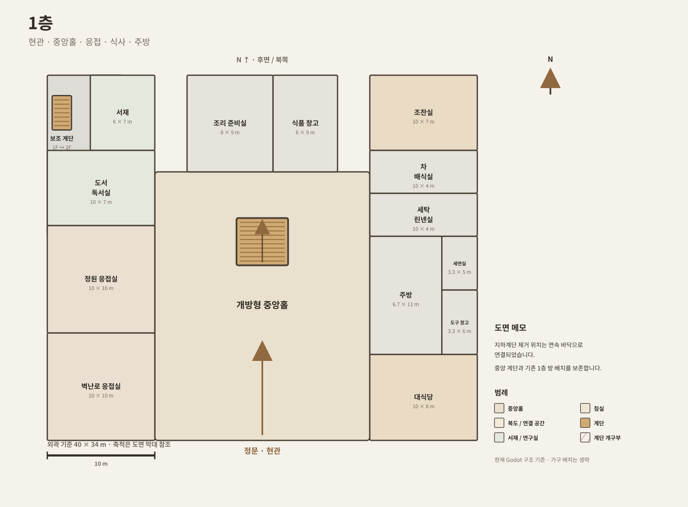
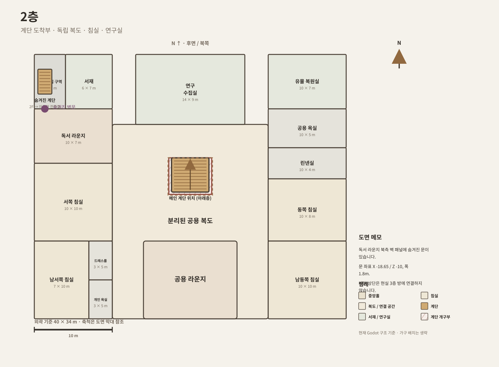
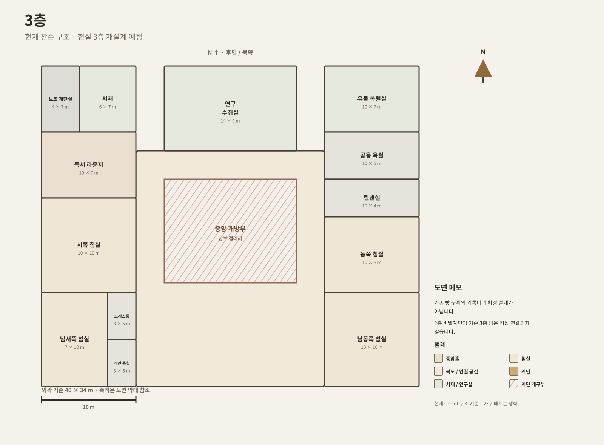
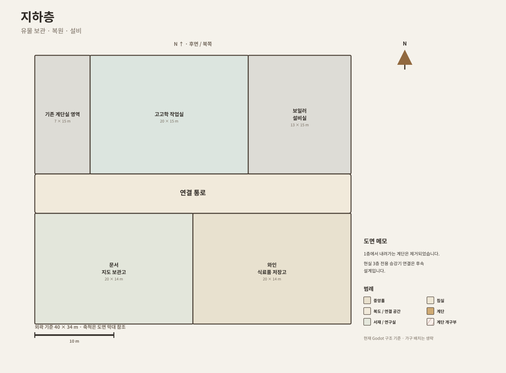
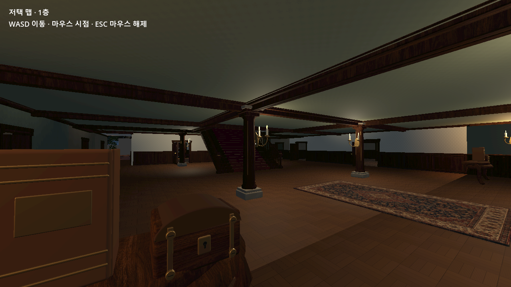

먼저 정하는 것
층별 기능, 방의 위치, 중앙홀의 크기, 계단과 복도의 관계를 결정합니다.
B1·1F·2F·3F가 어떤 역할을 맡고, 각 층의 방과 공용 공간이 어떻게 연결될지 먼저 정하는 단계입니다.
프로젝트에 저장된 방 좌표 도면을 사용하고, 최근 지하계단 제거와 숨겨진 진입부의 연결 표시를 반영했습니다. 가구와 상세 문짝은 생략한 공간 배치도입니다.






층별 기능, 방의 위치, 중앙홀의 크기, 계단과 복도의 관계를 결정합니다.
이 단계에서는 재질과 장식보다 공간의 크기와 연결 관계를 우선 확정합니다.